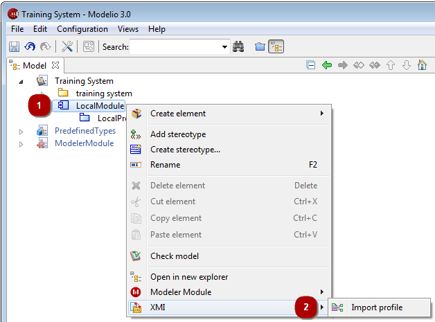

The Modelio import profile operation is used to import a UML2 profile into Modelio from an XMI file.
The “Import profile” command can only be run on modules. Imported elements will be located in the selected module.

Key:
Right-click on a module to open the context menu.
Run the “XMI/Import profile” command.
Key:
This field is where you select the path of the XMI file that you are about to import.
This progress bar shows the progress of the import operation.